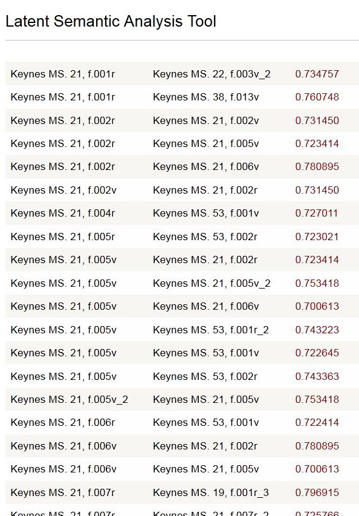

This output format is designed to create a reading guide for a single full document.
This option is only available for Document-document searches. (Chunk-chunk searches are also excluded.) You may only choose one document.
The results are listed in page order for the selected document by its chunks. Then for each chunk in the document, all the correlated passages/chunks above the selected cosine value are listed in catalog order. This allows the user to study the semantic relationships of the document with the rest of the corpus in a systematic way.
The listing looks like this example for Keynes MS. 21, "The Method of the Work." Click the correlation link to view the chunk pair side by side.
